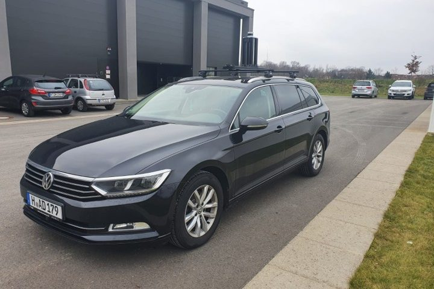

Source: LUH / IPeGLeibniz University Hannover · IPeG
On-road vehicle
An instrumented research vehicle with camera, LiDAR, IMU and GNSS records test drives in real road environments, across several projects and years.
- Multi-sensor recordings (ROS bags)
- Cross-project corpus